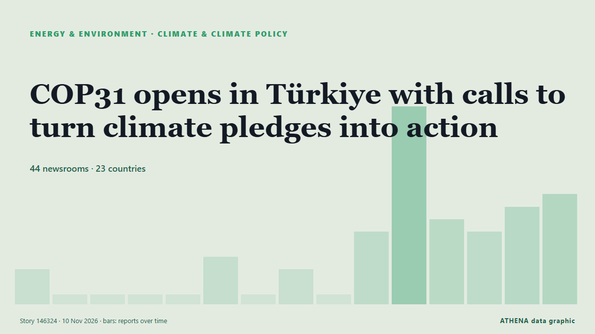

COP31 opens in Türkiye with calls to turn climate pledges into action

The world is on track to miss climate targets, and governments are grappling with the consequences of climate change. από Council on Foreign Relations
Αναφέρθηκε ανεξάρτητα από 44 μέσα σε 23 χώρες από τις 6 Νοε, πρώτο το Council on Foreign Relations· η κάλυψη εξασθενεί. Το ATHENA εκτιμά τον κίνδυνο μέτριο (3.1/10), κυρίως λόγω της σοβαρότητάς του και της εμβέλειάς του. Βεβαιότητα 90% (υψηλή): το επιβεβαιώνουν 44 ανεξάρτητα μέσα, μέση αξιοπιστία 71%. Μέσα ανά χώρα: Ηνωμένο Βασίλειο (8), Τουρκία (5), Φιλιππίνες (3). Κάλυψη: 6 Νοε έως 10 Νοε, 80 ώρες.
Γιατί έχει σημασία: Οι εξελίξεις στην ενέργεια και τους πόρους επηρεάζουν τις τιμές καυσίμων και ρεύματος, την ασφάλεια εφοδιασμού και τους κλιματικούς στόχους.
Τι άλλαξε: 30 νέες αναφορές από 28 μέσα στο 24ωρο έως 10 Νοε.
Πρώτη διατύπωση: PICAN urges Global Action on Climate Commitment at COP31
Οι τίτλοι των ειδήσεων παρουσιάζονται στα αγγλικά, όπως δημοσιεύτηκαν.
Πώς να διαβάσετε αυτή τη σελίδα
- Τι διαβάζετε
- 44 μέσα σε 23 χώρες ανέφεραν αυτό το γεγονός. Οι αναφορές παρακάτω εμφανίζονται με τη σειρά που δημοσιεύτηκαν· κάθε τίτλος ανοίγει το αρχικό άρθρο. Το ATHENA δεν γράφει δικά του ρεπορτάζ.
- Η εκτίμησή μας
- Για την καταγραφή — Οι αναφορές περιγράφουν ένα ολοκληρωμένο, εσωτερικό, εμπορικό ή προσωπικό ζήτημα. Το καταγράφουμε ώστε να βλέπετε ποιος το ανέφερε και πότε. Δεν παρακολουθούμε εδώ κίνδυνο ευρύτερης σύγκρουσης.
- Πόσα στοιχεία υπάρχουν
- Ισχυρή Πολλά ανεξάρτητα μέσα σε πολλές χώρες περιγράφουν το ίδιο γεγονός.
Αφού αφαιρεθούν οι επαναλήψεις, τα άσχετα και τα παλιά στοιχεία, υπολογίζονται 29 από τις 39 αναφορές που παρατίθενται· το 90% των τίτλων αντιστοιχεί στο γεγονός.
- Τι δεν σημαίνει
- Το ATHENA μετρά πώς καλύπτεται ένα γεγονός, όχι αν είναι αληθές. Δεν είναι πρόβλεψη, κρίση για το ποιος έχει δίκιο ή συμβουλή.
- Τι θα την άλλαζε
- Αναφορές από άλλα ανεξάρτητα μέσα που δείχνουν διαφορετική εξέλιξη, ή σαφής επιβεβαίωση ή διάψευση από επίσημη πηγή.
Εκτίμηση R2 · ανανεώνεται με κάθε ενημέρωση της σελίδας. Το ATHENA δεν έχει δημοσιεύσει ακόμη ιστορικό επιδόσεων για αυτές τις εκτιμήσεις· όταν το κάνει, θα συνδέεται εδώ.
Με μια ματιά
Επιλέγεται, βαθμολογείται και γράφεται από τη δημοσιευμένη μεθοδολογία του ATHENA. Κανένας συντάκτης δεν παρεμβαίνει σε μεμονωμένα γεγονότα. Πώς παράγεται ›
| 06 Nov 18:28 UTC | 2 |
|---|---|
| 07 Nov 00:28 UTC | 0 |
| 07 Nov 06:28 UTC | 0 |
| 07 Nov 12:28 UTC | 0 |
| 07 Nov 18:28 UTC | 0 |
| 08 Nov 00:28 UTC | 3 |
| 08 Nov 06:28 UTC | 0 |
| 08 Nov 12:28 UTC | 2 |
| 08 Nov 18:28 UTC | 0 |
| 09 Nov 00:28 UTC | 5 |
| 09 Nov 06:28 UTC | 15 |
| 09 Nov 12:28 UTC | 6 |
| 09 Nov 18:28 UTC | 5 |
| 10 Nov 00:28 UTC | 7 |
| 10 Nov 06:28 UTC | 8 |
| 06 Nov 23:43 UTC | 0.0 |
|---|---|
| 09 Nov 11:35 UTC | 0.7 |
| 09 Nov 11:39 UTC | 2.1 |
| 10 Nov 14:36 UTC | 4.2 |
| 10 Nov 14:41 UTC | 3.1 |
| 10 Nov 14:41 UTC | 3.1 |
Γιατί αυτοί οι αριθμοί
Σημασία
Κίνδυνος
Βεβαιότητα
Η κάλυψη — ποιος το ανέφερε και πότε
ο τίτλος όπως δημοσιεύτηκε · ανοίγει το πρωτότυπο- Council on Foreign Relations · Ηνωμένες ΠολιτείεςCOP31 and Climate Action’s New Centers of Gravity
- Post-Courier (PNG) · Παπούα Νέα ΓουινέαPICAN urges Global Action on Climate Commitment at COP31
- Amnesty International · Ηνωμένο ΒασίλειοCOP31: World leaders must break fossil fuels’ grip on climate policy and people’s futures.
- Post-Courier (PNG) · Παπούα Νέα ΓουινέαClimate finance, just Transition top agenda as World faces 1.5 overhoot
- Daily Sabah · ΤουρκίαCOP31 in Türkiye answers key questions on climate action
- The Guardian · Ηνωμένο ΒασίλειοCop31 must deliver climate progress that people can see is real, host says
- ABC News Australia · ΑυστραλίαAustralia's export emissions under scrutiny ahead of climate talks
- Rappler · ΦιλιππίνεςThe ocean can be our best bet vs climate change. It’s finally at the heart of COP31.
- Islands Business (Fiji) · PACThe ocean is missing from climate diplomacy, again
- Irish Mirror · Ιρλανδία'Fossil fuel crisis is supercharging twin climate and cost of living disasters like a cancer'
- Oman Observer · ΟμάνWorld entering 'age of climate extremes': UN chief
- RFI English · ΓαλλίαCop31 opens in Turkey as climate funding and fossil fuels divide nations
- Hürriyet Daily News · ΤουρκίαTürkiye calls for investment, not just pledges, at COP31
- Rappler · ΦιλιππίνεςCOP31 summit leaders urge world to move faster on climate
- The Straits Times · ΣιγκαπούρηClimate clash clouds COP31 opening as rich nations buck calls for more funding
- Daily Sabah · ΤουρκίαCOP31 opens in Türkiye with push to turn climate pledges into action
- Kurdistan24 (English) · ΙράκUN Chief Warns Climate Extremes Are Becoming the New Global Reality
- Grist · Ηνωμένες ΠολιτείεςWhat to expect as world leaders gather for COP31
- Turkish Minute · ΤουρκίαCOP31 opens in Antalya with early dispute over climate finance
- Climate Home News · Ηνωμένο ΒασίλειοCOP31 Bulletin Day 1: Agenda settled as COP urged to “supercharge solutions”
- Punch · ΝιγηρίαCOP31: World entering age of climate extremes — UN chief
- BusinessWorld · ΦιλιππίνεςCOP31 summit leaders urge world to “move faster” on climate
- Nation.Cymru · Ηνωμένο ΒασίλειοUN climate talks to kick off with focus on shoring up international co-operation
- ReliefWeb (UN OCHA) · INTAt COP31, World Food Programme urges use of innovative finance to prevent climate shocks from becoming hunger emergencies
- Times of Eswatini · ΕσουατίνιPaiva takes Eswatini’s women farmers’ voices to COP31
- Guardian Business · Ηνωμένο ΒασίλειοInsurance industry workers: how is climate-related risk managed in your company?
- Anadolu Agency (English) · ΤουρκίαINTERVIEW – COP31’s broad agenda reflects interconnected nature of climate change: European weather agency chief
- AllAfrica · AFRAfrica: COP31's focus on delivery will fail Africa if climate finance and technology continue to be designed externally
- Times of Eswatini · ΕσουατίνιEswatini sends first child representative to global climate summit
- The Independent · Ηνωμένο ΒασίλειοCop31 opens with chaos and passion: ‘Global heating is already costing the Earth – urgency must drive us’
- The Guardian · Ηνωμένο ΒασίλειοHigh fossil fuel prices spread inflation ‘like a cancer’, UN climate chief tells Cop31
- Agência Brasil (English) · ΒραζιλίαCOP31: Brazil hands over COP presidency to Türkiye
- Medical Xpress · Ηνωμένο ΒασίλειοVery strong El Niño episodes are associated with over 100,000 additional heat-related deaths worldwide per year
- Premium Times · ΝιγηρίαANALYSIS: COP31: Nine Key issues to shape talks as UN climate talks open in Türkiye
- AllAfrica · AFRAfrica: World Leaders Gather for COP31 in Türkiye
- MyJoyOnline · ΓκάναUN and global health leaders declare climate change a health pandemic as 2026 temperatures hit record highs
- Colombia One · ΚολομβίαCOP31 Opens With Calls to Turn Climate Pledges Into Action
- Lowy Institute — The Interpreter · ΑυστραλίαBillions came fast for the fuel crisis – the Pacific still waits for climate finance
- Eco-Business · ΣιγκαπούρηDeveloping countries 'missing out' on COP31’s climate delivery push, UN climate chief warns